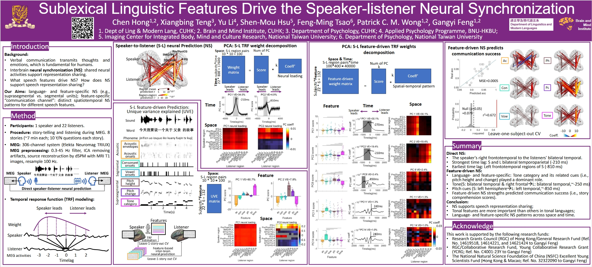

The Chinese University of Hong Kong
Language allows us to communicate our thoughts and feelings to others. Verbal communication conveys different levels of linguistic information through sounds. The speaker translates thoughts into sounds, while the listener hears the sounds and interprets them into meaningful content. These communication processes are proposed to be supported by synchronized neural activities between speakers and listeners across our speech production and perception systems. However, we are still far from understanding what speech content drives the speaker-listener neural synchronization and when and how the informational content transforms from the speaker’s production system to the listener’s perception system. To address these questions, we conducted a pseudo-hyperscanning magnetoencephalography (MEG) experiment with a story-telling paradigm and applied an encoding modeling approach to estimate the contribution of acoustic and sublexical linguistic contents (segmental and supra-segmental units) to the speaker-listener neural synchronizations. Our MEG experiment involved recording the neural signals of a speaker while the speaker naturally re-told eight stories (7 minutes per story) after reading scripts. We then collected the MEG responses of 22 listeners as they listened to the recorded stories. We estimated the cortical source activities across regions related to speech production and perception for both the speaker and listeners using dynamic statistical parametric mapping (dSPM). We used the temporal response function (TRF) approach to estimate to what extent the neural signals of the speaker predict the neural signals of the listeners to uncover shared neural variances (i.e., neural couplings) and the associated time lags between the speaker and listeners’ neural responses. We further estimated the extent to which the acoustic and sublexical linguistic features of the speech can account for these shared neural variances. We found significant speaker-listener neural couplings in a wide spread of regions, including auditory temporal (STG/HG), middle temporal (MTG/ITG), parietal (SMG/IPL), frontal (IFG), and central gyri (Pre/PostCG). The listeners’ auditory regions are best coupled with the speaker’s overall neural responses, with a degrading pattern from auditory to higher-level fronto-temporo-parietal regions (STG/HG, r = 0.016; MTG/ITG, r = 0.015, SMG/IPL, r = 0.012; IFG, r = 0.011; Pre/PostCG, r = 0.009); whereas the peak time differences in coupling show an opposite pattern (IFG = ~340ms; MTG/ITG = ~ 260ms; Pre/PostCG = ~260ms; STG/HG = ~260ms; SMG/IPL = ~210ms). Importantly, we found that both acoustic and linguistic features contributed to the neural couplings. Specifically, all features showed significant unique contributions, where the tone category and pitch height significantly outperformed other features in explaining neural couplings. We also identified weak but significant common contributions between acoustic and linguistic features as well as common contributions among segmental and supra-segmental features, but they differed in temporal latency. These findings not only reveal synchronized neural responses between speaker and listener but also demonstrate how linguistic features in assemble drive neural synchronizations. These findings shed light on revealing the common linguistic space created by interlocutors and the shared mechanisms of production-perception systems in representing linguistic information, highlighting the interconnected nature of language processing between individuals engaged in communication.
Topic Areas: Language Production, Computational Approaches
